Narrated films about the working station: how it works, how it is tested, what it made. English, 1080p. Newest first; older versions are kept in the archive below.
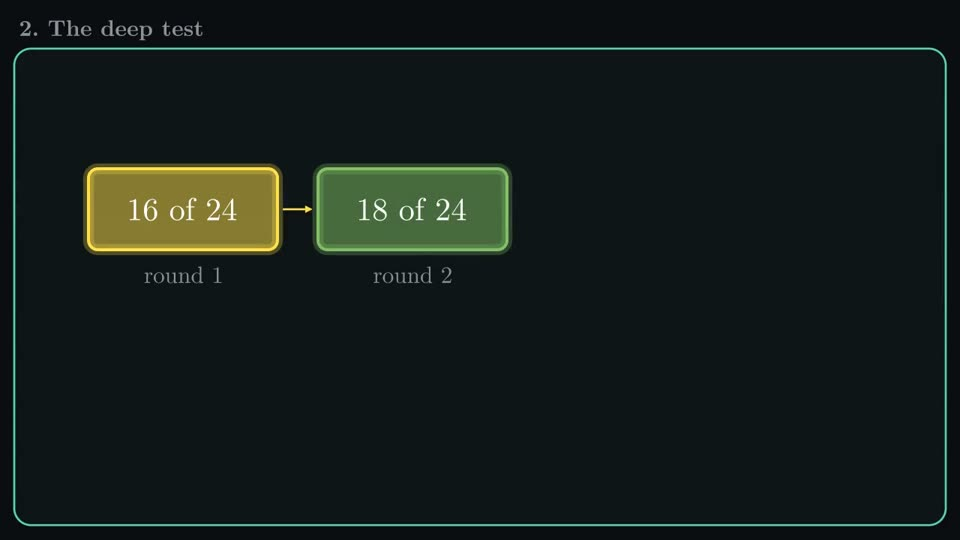
23:16 Newest · November 2026 · 4 parts The updated working station The whole system as it runs now, with 25 clickable chapters: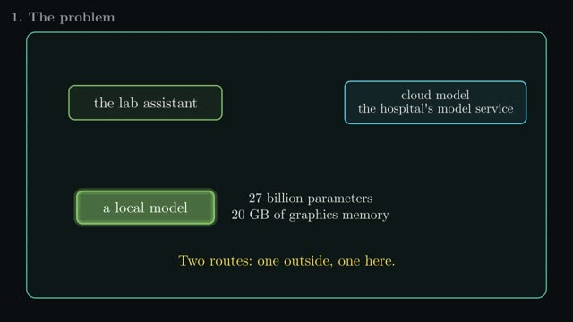
5:04 The smuggling testThe nightly test that checks patient data cannot leave the working station: two doors, 13 routing cases, 45 searches.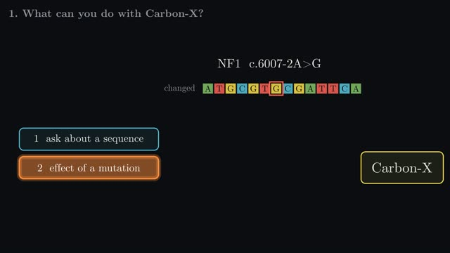
7:55 Carbon-X explainedAn open 14B model that reads DNA and English: what it can do, a small own test on public ClinVar variants, and how it runs locally.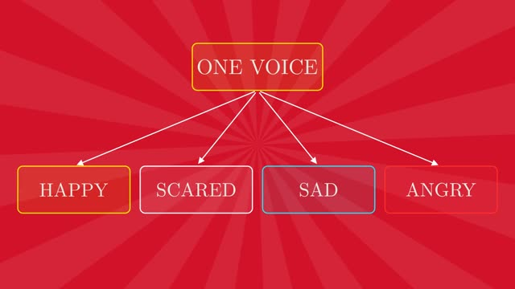
3:45 The film machine, with a voiceHow the video pipeline works: two players, six steps, a voice with emotions, and what still needs a person.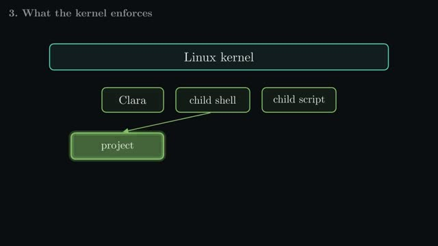
3:13 Clara agent: the harnessOne turn, what the kernel enforces, what is proven.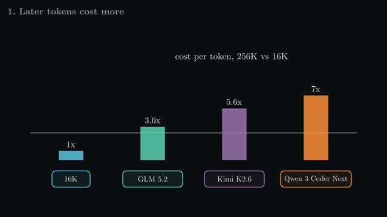
3:15 You don't need long contextA paper explained (Belcak et al., NVIDIA, 2026): compaction and selective reading instead of long context.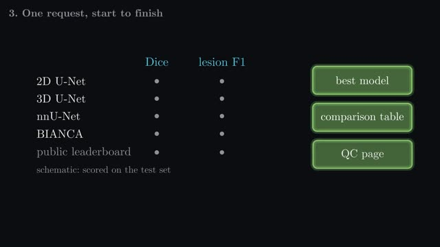
9:55 The 10-minute tourReplaced by the November film.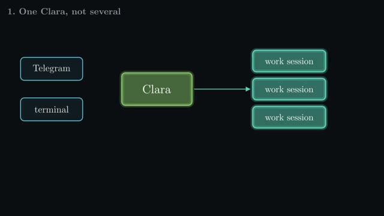
2:54 The new Clara06.11.2026 · now part of the November film.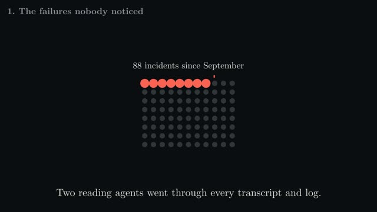
2:44 Clara's own film: watchdogsClara's first film, made with Clé. 2:04 How to build the film machineReplaced by the version with a voice.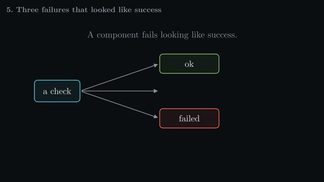
10:20 The first workstation videoThe very first explanation, video only.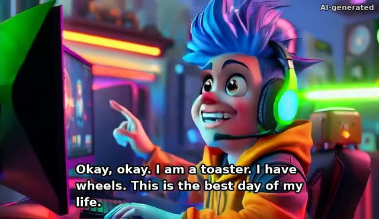
0:39 Ziggy Turbo v1A first animation test, AI-generated cartoon.Made on the working station by Clara with Clé. Working station home · Source on GitHub